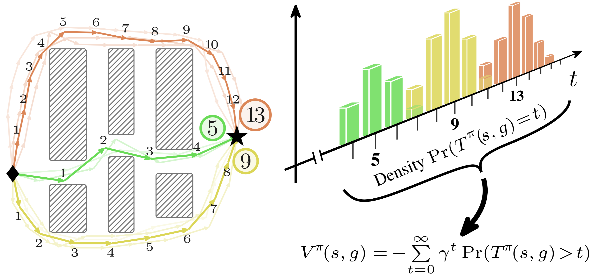
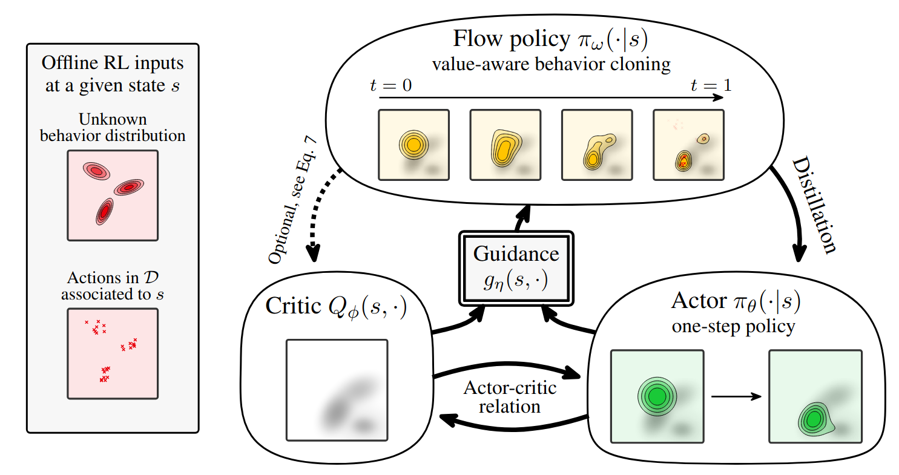
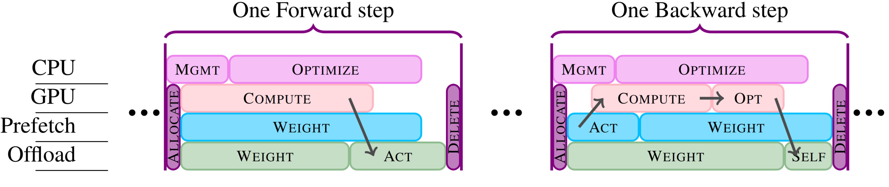
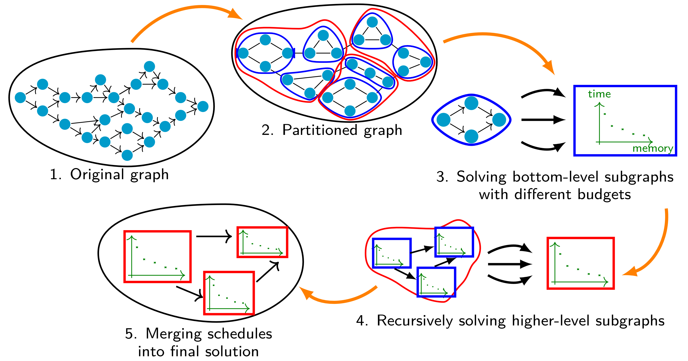
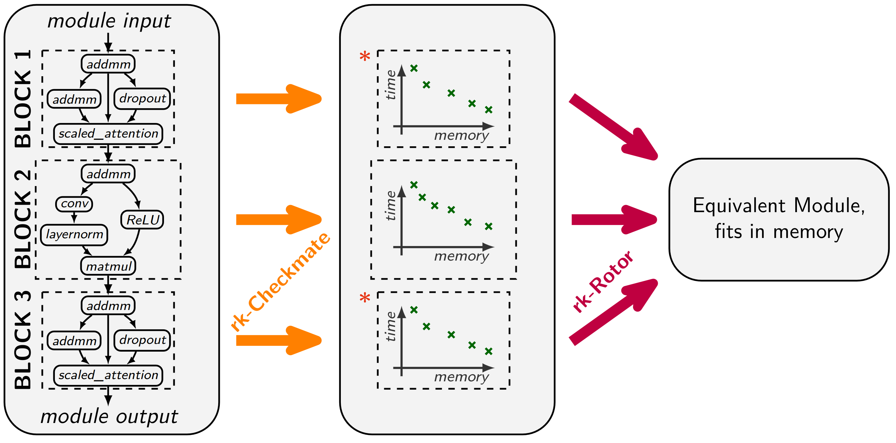

I am a first-year Ph.D. student, in the Willow team at Inria and Ecole normale supérieure ENS-PSL, advised by Justin Carpentier.
Currently, I am interested in reinforcement learning RL, diffusion models, simulation, optimization, and control, specifically for their applications in robotics. At present, my main collaborators are Franki Nguimatsia Tiofack, Fabian Schramm and my advisor Justin Carpentier. I am a firm believer in academic collaborations!
I studied at the ENS as an élève normalien (student with a civil servant status implying a full scholarship). I received a Bachelor's degree with double major in computer science and mathematics, and a Master's degree in computer science, from the ENS. Finally, I obtained the MVA (math, vision, learning) Master's degree in mathematics from ENS Paris-Saclay. Before joining the Willow team, I did two research internships during my studies. Starting by a short internship in 2021, I collaborated for two years with Xunyi Zhao, Lionel Eyraud-Dubois and Olivier Beaumont from Inria Bordeaux, leading to 3 papers : Rockmate (Oral at ICML 2023), HiRemate (ICML 2024) and Offmate (preprint). In spring 2022 I visited Jemin Hwangbo's lab at KAIST for 4 months.
Reviewer for ICLR, ICML, ICRA, RA-L.
Research

SVL: Goal-Conditioned Reinforcement Learning as Survival Learning
Franki Nguimatsia Tiofack,
Fabian Schramm,
Théotime Le Hellard,
Justin Carpentier
Preprint
ArXiv

Guided Flow Policy: Learning from High-Value Actions in Offline RL
Franki Nguimatsia Tiofack*,
Théotime Le Hellard*,
Fabian Schramm*,
Nicolas Perrin-Gilbert,
Justin Carpentier
International Conference on Learning Representations (ICLR) 2026
Website
•
ArXiv
•
Github
•
Video
 Accelerating trajectory optimization with Sobolev-trained diffusion policies
Accelerating trajectory optimization with Sobolev-trained diffusion policies
Théotime Le Hellard*,
Franki Nguimatsia Tiofack*,
Quentin Le Lidec,
Justin Carpentier
World Symposium on the Algorithmic Foundations of Robotics (WAFR) 2026
ArXiv
Older works

OffMate: full fine-tuning of LLMs on a single GPU by re-materialization and offloading
Xunyi Zhao,
Lionel Eyraud-Dubois,
Théotime Le Hellard,
Julia Gusak,
Olivier Beaumont,
Preprint
Hal (ArXiv)
•
Github

HiRemate: Hierarchical Approach for Efficient Re-materialization of Neural Networks
Julia Gusak*,
Xunyi Zhao*,
Théotime Le Hellard*,
Zhe Li,
Lionel Eyraud-Dubois,
Olivier Beaumont,
International Conference on Machine Learning (ICML) 2025
OpenReview
•
Github

Rockmate: an Efficient, Fast, Automatic and Generic Tool for Re-materialization in PyTorch
Xunyi Zhao*,
Théotime Le Hellard*,
Lionel Eyraud-Dubois,
Julia Gusak,
Olivier Beaumont,
International Conference on Machine Learning (ICML) 2023
Oral •
ArXiv
•
Github
•
Video